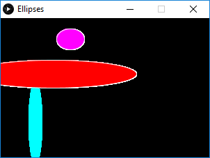
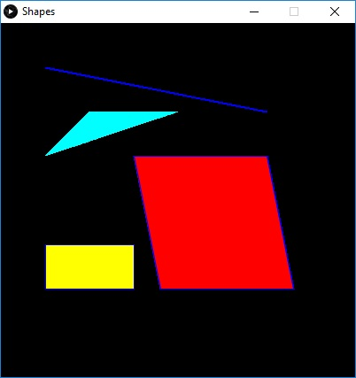
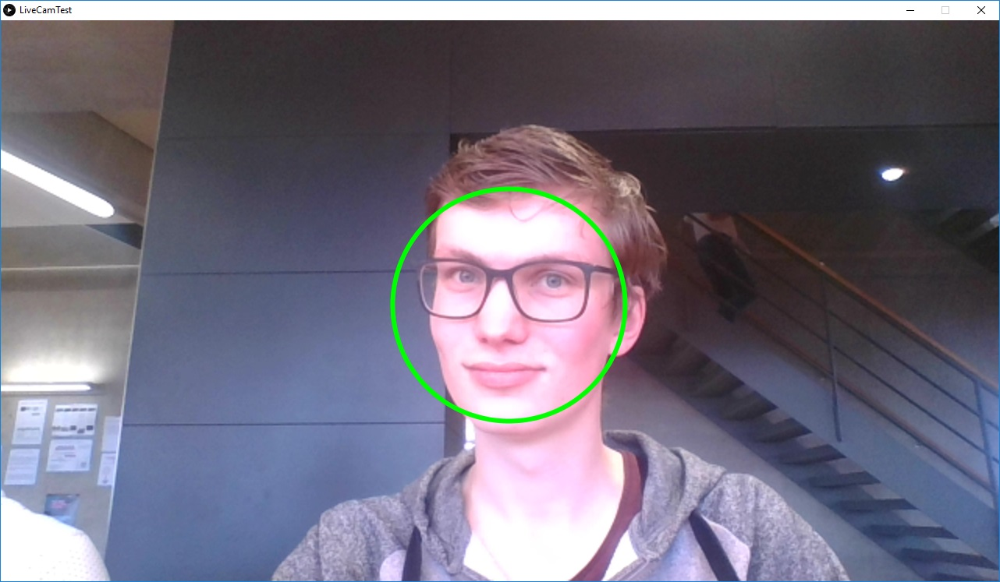

Computer Vision
In this workshop we learned to use Processing as a computer vision tool. I first learned te basics of processing and then I put it all together to draw shapes on my face.
In this workshop we learned to use Processing as a computer vision tool. I first learned te basics of processing and then I put it all together to draw shapes on my face.
We had a couple of assignments and you can see the results here.
The first assignment was to draw three different ellipses. I challenged myself to make a Ellipse class. You can see the result below the code.
Ellipse c1 = new Ellipse(100, 30, 40, 30, color(255,0,255), true);Ellipse c2 = new Ellipse(50, 150, 20, 120, color(0,255,255), false);Ellipse c3 = new Ellipse(75, 80, 240, 40, color(255,0,0), true);void setup() {size(300,200);background(0);}void draw() {c1.update();c2.update();c3.update();}class Ellipse {int tempX, tempY, tempW, tempH;color tempF;boolean tempS;Ellipse(int x, int y, int w, int h, color f, boolean s) {tempX = x;tempY = y;tempW = w;tempH = h;tempF = f;tempS = s;}void update() {fill(tempF);if (tempS == true) {stroke(255);} else {noStroke();}ellipse(tempX, tempY, tempW, tempH);}}
I changed the code from the previous assignment to create four different shapes.
Shape s1 = new Shape(50, 50, 300, 100, color(255,0,255), true, 1);Shape s2 = new Shape(100, 100, 50, 150, color(0,255,255), false, 2);Shape s3 = new Shape(150, 150, 150, 150, color(255,0,0), true, 3);Shape s4 = new Shape(50, 250, 100, 50, color(255,255,0), true, 4);void setup() {size(400,400);background(0);}void draw() {s1.update();s2.update();s3.update();s4.update();}class Shape {int tempX, tempY, tempW, tempH, tempShape;color tempF;boolean tempS;Shape(int x, int y, int w, int h, color f, boolean s, int shape) {tempX = x;tempY = y;tempW = w;tempH = h;tempF = f;tempS = s;tempShape = shape;}void update() {fill(tempF);if (tempS == true) {stroke(0, 0, 255);} else {noStroke();}switch(tempShape) {case 1:line(tempX,tempY,tempW,tempH);return;case 2:triangle(tempX,tempY,tempW,tempH,tempX * 2, tempY);return;case 3:quad(tempX,tempY,tempX * 2,tempY, (tempX * 2) * 1.1, tempY * 2, tempX * 1.2,tempY * 2);return;case 4:rect(tempX,tempY,tempW,tempH);return;default:ellipse(tempX, tempY, tempW, tempH);}}}
After trying a couple of exercises with the mouse I did the assignment where I needed to use the mouse to make two different shapes move and change. I made a bouncy line that stretched when you would pull it down.
void setup() {size(800,800);background(255);ellipseMode(CENTER);}void draw() {background(255);stroke(0);strokeWeight(map(mouseY, 0, 800, 100, 0));line(width/2,0, mouseX, mouseY);noStroke();fill(map(sin((mouseY+mouseX) * 0.01), 0, 1, 0, 255),map(mouseX, 0, 800, 0, 255),map(mouseY, 0, 800, 0, 255));ellipse(mouseX, mouseY, 100, 100);}
In this assignment I only needed to change a rectangle to a circle using facial recognition the openCV library.
import gab.opencv.*;import processing.video.*;import java.awt.*;Capture video;OpenCV opencv;void setup() {size(1280, 720);video = new Capture(this, 1280/2, 720/2);opencv = new OpenCV(this, 1280/2, 720/2);opencv.loadCascade(OpenCV.CASCADE_FRONTALFACE);ellipseMode(CORNER);video.start();}void draw() {scale(2);opencv.loadImage(video);image(video, 0, 0 );noFill();stroke(0, 255, 0);strokeWeight(3);Rectangle[] faces = opencv.detect();println(faces.length);for (int i = 0; i < faces.length; i++) {println(faces[i].x + "," + faces[i].y);ellipse(faces[i].x, faces[i].y, faces[i].width, faces[i].height);}}void captureEvent(Capture c) {c.read();}
We had to put something on a part of our face by setting a different cascade. I gave myself a clowns nose.
import gab.opencv.*;import processing.video.*;import java.awt.*;Capture video;OpenCV opencv;void setup() {size(1280, 720);video = new Capture(this, 1280/2, 720/2);opencv = new OpenCV(this, 1280/2, 720/2);opencv.loadCascade(OpenCV.CASCADE_NOSE);ellipseMode(CORNER);video.start();}void draw() {scale(2);opencv.loadImage(video);image(video, 0, 0 );fill(255,0,0);noStroke();strokeWeight(3);Rectangle[] faces = opencv.detect();println(faces.length);for (int i = 0; i < faces.length; i++) {println(faces[i].x + "," + faces[i].y);ellipse(faces[i].x, faces[i].y - 10, faces[i].width, faces[i].width);}}void captureEvent(Capture c) {c.read();}
I used the OpenCVMultipleColorTrackingLiveCam library to add wasps to the video stream and moved them with my arm.